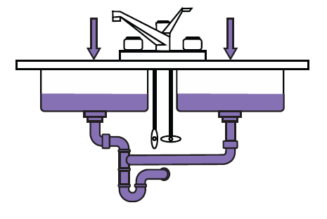

Stuff goes bad. Erlang in anger
Contents
Introduction
There’s something rather unique in Erlang in how it approaches failure compared to most other programming languages. There’s this common way of thinking where the language, programming environment, and methodology do everything possible to prevent errors. Something going wrong at run-time is something that needs to be prevented, and if it cannot be prevented, then it’s out of scope for whatever solution people have been thinking about.
The program is written once, and after that, it’s off to production, whatever may happen there. If there are errors, new versions will need to be shipped.
Erlang, on the other hand, takes the approach that failures will happen no matter what, whether they’re developer-, operator-, or hardware-related. It is rarely practical or even possible to get rid of all errors in a program or a system.1 If you can deal with some errors rather than preventing them at all cost, then most undefined behaviours of a program can go in that "deal with it" approach.
This is where the "Let it Crash" 2 idea comes from: Because you can now deal with failure, and because the cost of weeding out all of the complex bugs from a system before it hits production is often prohibitive, programmers should only deal with the errors they know how to handle, and leave the rest for another process (a supervisor) or the virtual machine to deal with.
Given that most bugs are transient 3, simply restarting processes back to a state known to be stable when encountering an error can be a surprisingly good strategy.
Erlang is a programming environment where the approach taken is equivalent to the human body’s immune system, whereas most other languages only care about hygiene to make sure no germ enters the body. Both forms appear extremely important to me. Almost every environment offers varying degrees of hygiene. Nearly no other environment offers the immune system where errors at run time can be dealt with and seen as survivable.
Because the system doesn’t collapse the first time something bad touches it, Erlang/OTP also allows you to be a doctor. You can go in the system, pry it open right there in production, carefully observe everything inside as it runs, and even try to fix it interactively. To continue with the analogy, Erlang allows you to perform extensive tests to diagnose the problem and various degrees of surgery (even very invasive surgery), without the patients needing to sit down or interrupt their daily activities.
This book intends to be a little guide about how to be the Erlang medic in a time of war. It is first and foremost a collection of tips and tricks to help understand where failures come from, and a dictionary of different code snippets and practices that helped developers debug production systems that were built in Erlang.
This book is not for beginners. There is a gap left between most tutorials, books, training sessions, and actually being able to operate, diagnose, and debug running systems once they’ve made it to production. There’s a fumbling phase implicit to a programmer’s learning of a new language and environment where they just have to figure how to get out of the guidelines and step into the real world, with the community that goes with it.
This book assumes that the reader is proficient in basic Erlang and the OTP framework. Erlang/OTP features are explained as I see fit — usually when I consider them tricky — and it is expected that a reader who feels confused by usual Erlang/OTP material will have an idea of where to look for explanations if necessary 4.
What is not necessarily assumed is that the reader knows how to debug Erlang software, dive into an existing code base, diagnose issues, or has an idea of the best practices about deploying Erlang in a production environment 5
This book is divided in two parts.
Part I focuses on how to write applications. It includes how to dive into a code base (Chapter 1), general tips on writing open source Erlang software (Chapter 2), and how to plan for overload in your system design (Chapter 3).
Part II focuses on being an Erlang medic and concerns existing, living systems. It contains instructions on how to connect to a running node (Chapter 4), and the basic runtime metrics available (Chapter 5). It also explains how to perform a system autopsy using a crash dump (Chapter 6), how to identify and fix memory leaks (Chapter 7), and how to find runaway CPU usage (Chapter 8). The final chapter contains instructions on how to trace Erlang function calls in production using recon 6 to understand issues before they bring the system down (Chapter 9).
Each chapter is followed up by a few optional exercises in the form of questions or hands-on things to try if you feel like making sure you understood everything, or if you want to push things further.
"Read the source" is one of the most annoying things to be told, but dealing with Erlang programmers, you’ll have to do it often. Either the documentation for a library will be incomplete, outdated, or just not there. In other cases, Erlang programmers are a bit similar to Lispers in that they will tend to write libraries that will solve their problems and not really test or try them in other circumstances, leaving it to you to extend or fix issues that arise in new contexts.
It’s thus pretty much guaranteed you’ll have to go dive in some code base you know nothing about, either because you inherited it at work, or because you need to fix it or understand it to be able to move forward with your own system. This is in fact true of most languages whenever the project you work on is not one you designed yourself.
There are three main types of Erlang code bases you’ll encounter in the wild: raw Erlang code bases, OTP applications, and OTP releases. In this chapter, we’ll look at each of these and try to provide helpful tips on navigating them.
If you encounter a raw Erlang code base, you’re pretty much on your own. These rarely follow any specific standard, and you have to dive in the old way to figure out whatever happens in there.
This means hoping for a README.md file or something similar that can point to an entry point in the application, and going from there, or hoping for some contact information that can be used to ask questions to the author(s) of the library.
Fortunately, you should rarely encounter raw Erlang in the wild, and they are often beginner projects, or awesome projects that were once built by Erlang beginners and now need a serious rewrite. In general, the advent of tools such as rebar 1 made it so most people use OTP Applications.
1 https://github.com/rebar/rebar/ — a build tool briefly introduced in Chapter 2Figuring out OTP applications is usually rather simple. They usually all share a directory structure that looks like:
doc/
ebin/
src/
test/
LICENSE.txt
README.md
rebar.config
There might be slight differences, but the general structure will be the same.
Each OTP application should contain an app file, either ebin/<AppName>.app or more often, src/<AppName>.app.src 2. There are two main varieties of app files:
{application, useragent, [
{description, "Identify browsers & OSes from useragent strings"},
{vsn, "0.1.2"},
{registered, []},
{applications, [kernel, stdlib]},
{modules, [useragent]}
]}.
And.
{application, dispcount, [
{description, "A dispatching library for resources and task "
"limiting based on shared counters"},
{vsn, "1.0.0"},
{applications, [kernel, stdlib]},
{registered, []},
{mod, {dispcount, []}},
{modules, [dispcount, dispcount_serv, dispcount_sup,
dispcount_supersup, dispcount_watcher, watchers_sup]}
]}.
This first case is called a library application, while the second case is a regular application.
2 A build system generates the final file that goes in ebin. Note that in these cases, many src/<AppName>.app.src files do not specify modules and let the build system take care of it.Library applications will usually have modules named appname _something, and one module named appname . This will usually be the interface module that’s central to the library and contains a quick way into most of the functionality provided.
By looking at the source of the module, you can figure out how it works with little effort: If the module adheres to any given behaviour (gen_server, gen_fsm, etc.), you’re most likely expected to start a process under one of your own supervisors and call it that way. If no behaviour is included, then you probably have a functional, stateless library on your hands. For this case, the module’s exported functions should give you a quick way to understand its purpose.
For a regular OTP application, there are two potential modules that act as the entry point:
The first file should be similar in use to what we had in a library application (an entry point), while the second one will implement the application behaviour, and will represent the top of the application’s process hierarchy. In some cases the first file will play both roles at once.
If you plan on simply adding the application as a dependency to your own app, then look inside appname for details and information. If you need to maintain and/or fix the application, go for appname _app instead.
The application will start a top-level supervisor and return its pid. This top-level supervisor will then contain the specifications of all the child processes it will start on its own 3.
The higher a process resides in the tree, the more likely it is to be vital to the survival of the application. You can also estimate how important a process is by the order it is started (all children in the supervision tree are started in order, depth-first). If a process is started later in the supervision tree, it probably depends on processes that were started earlier.
Moreover, worker processes that depend on each other within the same application (say, a process that buffers socket communications and relays them to a finite-state machine in charge of understanding the protocol) are likely to be regrouped under the same supervisor and to fail together when something goes wrong. This is a deliberate choice, as it is usually simpler to start from a blank slate, restarting both processes, rather than trying to figure out how to recuperate when one or the other loses or corrupts its state.
3 In some cases, the supervisor specifies no children: they will either be started dynamically by some function of the API or in a start phase of the application, or the supervisor is only there to allow OTP environment variables (in the env tuple of the app file) to be loaded.The supervisor restart strategy reflects the relationship between processes under a supervisor:
This structure means it is easiest to navigate OTP applications in a top-down manner by exploring supervision subtrees.
For each worker process supervised, the behaviour it implements will give a good clue about its purpose:
All of these modules will contain the same kind of structure: exported functions that represent the user-facing interface, exported functions for the callback module, and private functions, usually in that order.
Based on their supervision relationship and the typical role of each behaviour, looking at the interface to be used by other modules and the behaviours implemented should reveal a lot of information about the program you’re diving into.
All applications have dependencies 5, and these dependencies will have their own dependencies. OTP applications usually share no state between them, so it’s possible to know what bits of code depend on what other bits of code by looking at the app file only, assuming the developer wrote them in a mostly correct manner. Figure 1.1 shows a diagram that can be generated from looking at app files to help understand the structure of OTP applications.
Using such a hierarchy and looking at each application’s short description might be helpful to draw a rough, general map of where everything is located. To generate a similar diagram, find recon’s script directory and call escript script/app_deps.erl 6. Similar hierarchies can be found using the observer 7 application, but for individual supervision trees. Put together, you may get an easy way to find out what does what in the code base.
4 Some developers will use one_for_one supervisors when rest_for_one is more appropriate. They require strict ordering to boot correctly, but forget about said order when restarting or if a predecessor dies.
5 At the very least on the kernel and stdlib applications
6 This script depends on graphviz
7 http://www.erlang.org/doc/apps/observer/observer_ug.html
Figure 1.1: Dependency graph of riak_cs, Basho’s open source cloud library. The graph ignores dependencies on common applications like kernel and stdlib. Ovals are applications, rectangles are library applications.
OTP releases are not a lot harder to understand than most OTP applications you’ll encounter in the wild. A release is a set of OTP applications packaged in a production-ready manner so it boots and shuts down without needing to manually call application:start/2 for any app. Of course there’s a bit more to releases than that, but generally, the same discovery process used for individual OTP applications will be applicable here.
You’ll usually have a file similar to the configuration files used by systools or reltool, which will state all applications part of the release and a few 8 options regarding their packaging. To understand them, I recommend reading existing documentation on them. If you’re lucky, the project may be using relx9, an easier tool that was officially released in early 2014.
8 A lot
9 https://github.com/erlware/relx/wiki
Download the code at https://github.com/ferd/recon_demo. This will be used as a test bed for exercises throughout the book. Given you are not familiar with the code base yet, let’s see if you can use the tips and tricks mentioned in this chapter to get an understanding of it.
Most Erlang books tend to explain how to build Erlang/OTP applications, but few of them go very much in depth about how to integrate with the Erlang community doing Open Source work. Some of them even avoid the topic on purpose. This chapter dedicates itself to doing a quick tour of the state of affairs in Erlang.
OTP applications are the vast majority of the open source code people will encounter. In fact, many people who would need to build an OTP release would do so as one umbrella OTP application.
If what you’re writing is a stand-alone piece of code that could be used by someone building a product, it’s likely an OTP application. If what you’re building is a product that stands on its own and should be deployed by users as-is (or with a little configuration), what you should be building is an OTP release. 1
The main build tools supported are rebar and erlang.mk. The former is a portable Erlang script that will be used to wrap around a lot of standard functionality and add its own, while the latter is a very fancy makefile that does a bit less, but tends to be faster when it comes to compiling. In this chapter, I’ll mostly focus on using rebar to build things, given it’s the ad-hoc standard, is well-established, and erlang.mk applications tend to also be supported by rebar as dependencies.
1 The details of how to build an OTP application or release is left up to the Erlang introduction book you have at hand.
The structures of OTP applications and of OTP releases are different. An OTP application can be expected to have one top-level supervisor (if any) and possibly a bunch of dependencies that sit below it. An OTP release will usually be composed of multiple OTP applications, which may or may not depend on each other. This will lead to two major ways to lay out applications.
For OTP applications, the proper structure is pretty much the same as what was explained in 1.2:
1 doc/
2 deps/
3 ebin/
4 src/
5 test/
6 LICENSE.txt
7 README.md
8 rebar.configWhat’s new in this one is the deps/ directory, which is fairly useful to have, but that will be generated automatically by rebar 2 if necessary. That’s because there is no canonical package management in Erlang. People instead adopted rebar, which fetches dependencies locally, on a per-project basis. This is fine and removes a truckload of conflicts, but means that each project you have may have to download its own set of dependencies
This is accomplished with rebar by adding a few config lines to rebar.config:
1 {deps,
2 [{application_name, "1.0.*",
3 {git, "git://github.com/user/myapp.git", {branch,"master"}}},
4 {application_name, "2.0.1",
5 {git, "git://github.com/user/hisapp.git", {tag,"2.0.1"}}},
6 {application_name, "",
7 {git, "https://bitbucket.org/user/herapp.git", "7cd0aef4cd65"}},
8 {application_name, "my regex",
9 {hg, "https://bitbucket.org/user/theirapp.hg" {branch, "stable"}}}]}.Applications are fetched directly from a git (or hg, or svn) source, recursively. They can then be compiled, and specific compile options can be added with the {erl_opts, List}. option in the config file 3.
Within these directories, you can do your regular development of an OTP application. To compile them, call rebar get-deps compile, which will download all dependencies, and then build them and your app at once.
When making your application public to the world, distribute it without the dependencies. It’s quite possible that other developers’ applications depend on the same applications yours do, and it’s no use shipping them all multiple times. The build system in place (in this case, rebar) should be able to figure out duplicated entries and fetch everything necessary only once.
For releases, the structure should be a bit different 4. Releases are collections of applications, and their structures should reflect that
Instead of having a top-level app, applications should be nested one level deeper and divided into two categories: apps and deps. The apps directory contains your applications’ source code (say, internal business code), and the deps directory contains independently managed dependency applications.
apps/
doc/
deps/
LICENSE.txt
README.md
rebar.config
This structure lends itself to generating releases. Tools such as Systool and Reltool have been covered before 5, and can allow the user plenty of power. An easier tool that recently appeared is relx 6.
A relx configuration file for the directory structure above would look like:
1 {paths, ["apps", "deps"]}.
2 {include_erts, false}. % will use currently installed Erlang
3 {default_release, demo, "1.0.0"}.
4
5 {release, {demo, "1.0.0"},
6 [members,
7 feedstore,
8 ...
9 recon]}.
3 More details by calling rebar help compile
4 I say should because many Erlang developers put their final system under a single top-level application (in src) and a bunch of follower ones as dependencies (in deps), which is less than ideal for distribution purposes and conflicts with assumptions on directory structures made by OTP. People who do that tend to build from source on the production servers and run custom commands to boot their applications.
5 http://learnyousomeerlang.com/release-is-the-word
6 https://github.com/erlware/relx/wiki
Calling ./relx (if the executable is in the current directory) will build a release, to be found in the _rel/ directory. If you really like using rebar, you can build a release as part of the project’s compilation by using a rebar hook in rebar.config:
1 {post_hooks,[{compile, "./relx"}]}.And every time rebar compile will be called, the release will be generated.
In complex production systems, most faults and errors are transient, and retrying an operation is a good way to do things — Jim Gray’s paper 7 quotes Mean Times Between Failures (MTBF) of systems handling transient bugs being better by a factor of 4 when doing this. Still, supervisors aren’t just about restarting.
One very important part of Erlang supervisors and their supervision trees is that their start phases are synchronous. Each OTP process has the potential to prevent its siblings and cousins from booting. If the process dies, it’s retried again, and again, until it works, or fails too often.
That’s where people make a very common mistake. There isn’t a backoff or cooldown period before a supervisor restarts a crashed child. When a network-based application tries to set up a connection during its initialization phase and the remote service is down, the application fails to boot after too many fruitless restarts. Then the system may shut down.
Many Erlang developers end up arguing in favor of a supervisor that has a cooldown period. I strongly oppose the sentiment for one simple reason: it’s all about the guarantees.
Restarting a process is about bringing it back to a stable, known state. From there, things can be retried. When the initialization isn’t stable, supervision is worth very little. An initialized process should be stable no matter what happens. That way, when its siblings and cousins get started later on, they can be booted fully knowing that the rest of the system that came up before them is healthy.
7 http://mononcqc.tumblr.com/post/35165909365/why-do-computers-stop
If you don’t provide that stable state, or if you were to start the entire system asynchronously, you would get very little benefit from this structure that a try ... catch in a loop wouldn’t provide.
Supervised processes provide guarantees in their initialization phase, not a best effort. This means that when you’re writing a client for a database or service, you shouldn’t need a connection to be established as part of the initialization phase unless you’re ready to say it will always be available no matter what happens.
You could force a connection during initialization if you know the database is on the same host and should be booted before your Erlang system, for example. Then a restart should work. In case of something incomprehensible and unexpected that breaks these guarantees, the node will end up crashing, which is desirable: a pre-condition to starting your system hasn’t been met. It’s a system-wide assertion that failed.
If, on the other hand, your database is on a remote host, you should expect the connection to fail. It’s just a reality of distributed systems that things go down.8 In this case, the only guarantee you can make in the client process is that your client will be able to handle requests, but not that it will communicate to the database. It could return {error, not_connected} on all calls during a net split, for example.
The reconnection to the database can then be done using whatever cooldown or backoff strategy you believe is optimal, without impacting the stability of the system. It can be attempted in the initialization phase as an optimization, but the process should be able to reconnect later on if anything ever disconnects.
If you expect failure to happen on an external service, do not make its presence a guarantee of your system. We’re dealing with the real world here, and failure of external dependencies is always an option.
Of course, the libraries and processes that call such a client will then error out if they don’t expect to work without a database. That’s an entirely different issue in a different problem space, one that depends on your business rules and what you can or can’t do to a client, but one that is possible to work around. For example, consider a client for a service that stores operational metrics — the code that calls that client could very well ignore the errors without adverse effects to the system as a whole.
The difference in both initialization and supervision approaches is that the client’s callers make the decision about how much failure they can tolerate, not the client itself. That’s a very important distinction when it comes to designing fault-tolerant systems. Yes, supervisors are about restarts, but they should be about restarts to a stable known state.
8 Or latency shoots up enough that it is impossible to tell the difference from failure.
The following code attempts to guarantee a connection as part of the process’ state:
1 init(Args) ->
2 Opts = parse_args(Args),
3 {ok, Port} = connect(Opts),
4 {ok, #state{sock=Port, opts=Opts}}.
5
6 [...]
7
8 handle_info(reconnect, S = #state{sock=undefined, opts=Opts}) ->
9 %% try reconnecting in a loop
10 case connect(Opts) of
11 {ok, New} -> {noreply, S#state{sock=New}};
12 _ -> self() ! reconnect, {noreply, S}
13 end;
Instead, consider rewriting it as:
1 init(Args) ->
2 Opts = parse_args(Args),
3 %% you could try connecting here anyway, for a best
4 %% effort thing, but be ready to not have a connection.
5 self() ! reconnect,
6 {ok, #state{sock=undefined, opts=Opts}}.
7
8 [...]
9
10 handle_info(reconnect, S = #state{sock=undefined, opts=Opts}) ->
11 %% try reconnecting in a loop
12 case connect(Opts) of
13 {ok, New} -> {noreply, S#state{sock=New}};
14 _ -> self() ! reconnect, {noreply, S}
15 end;
You now allow initializations with fewer guarantees: they went from the connection is available to the connection manager is available.
Production systems I have worked with have been a mix of both approaches. Things like configuration files, access to the file system (say for logging purposes), local resources that can be depended on (opening UDP ports for logs), restoring a stable state from disk or network, and so on, are things I’ll put into requirements of a supervisor and may decide to synchronously load no matter how long it takes (some applications may just end up having over 10 minute boot times in rare cases, but that’s okay because we’re possibly syncing gigabytes that we need to work with as a base state if we don’t want to serve incorrect information.)
On the other hand, code that depends on non-local databases and external services will adopt partial startups with quicker supervision tree booting because if the failure is expected to happen often during regular operations, then there’s no difference between now and later. You have to handle it the same, and for these parts of the system, far less strict guarantees are often the better solution.
No matter what, a sequence of failures is not a death sentence for the node. Once a system has been divided into various OTP applications, it becomes possible to choose which applications are vital or not to the node. Each OTP application can be started in 3 ways: temporary, transient, permanent, either by doing it manually in application:start(Name, Type), or in the config file for your release:
It is also possible to start an application as an included application, which starts it under your own OTP supervisor with its own strategy to restart it.
Using the code at https://github.com/ferd/recon_demo:
By far, the most common cause of failure I’ve encountered in real-world scenarios is due to the node running out of memory. Furthermore, it is usually related to message queues going out of bounds. 1 There are plenty of ways to deal with this, but knowing which one to use will require a decent understanding of the system you’re working on.
To oversimplify things, most of the projects I end up working on can be visualized as a very large bathroom sink. User and data input are flowing from the faucet. The Erlang system itself is the sink and the pipes, and wherever the output goes (whether it’s a database, an external API or service, and so on) is the sewer system.
When an Erlang node dies because of a queue overflowing, figuring out who to blame is crucial. Did someone put too much water in the sink? Are the sewer systems backing up ? Did you just design too small a pipe?
1 Figuring out that a message queue is the problem is explained in Chapter 6, specifically in Section 6.2
Determining what queue blew up is not necessarily hard. This is information that can be found in a crash dump. Finding out why it blew up is trickier. Based on the role of the process or run-time inspection, it’s possible to figure out whether causes include fast flooding, blocked processes that won’t process messages fast enough, and so on.
The most difficult part is to decide how to fix it. When the sink gets clogged up by too much waste, we will usually start by trying to make the bathroom sink itself larger (the part of our program that crashed, at the edge). Then we figure out the sink’s drain is too small, and optimize that. Then we find out the pipes themselves are too narrow, and optimize that. The overload gets pushed further down the system, until the sewers can’t take it anymore. At that point, we may try to add sinks or add bathrooms to help with the global input level.
Then there’s a point where things can’t be improved anymore at the bathroom’s level. There are too many logs sent around, there’s a bottleneck on databases that need the consistency, or there’s simply not enough knowledge or manpower in your organization to improve things there.
By finding that point, we identified what the true bottleneck of the system was, and all the prior optimization was nice (and likely expensive), but it was more or less in vain.
We need to be more clever, and so things are moved back up a level. We try to massage the information going in the system to make it either lighter (whether it is through compression, better algorithms and data representation, caching, and so on).
Even then, there are times where the overload will be too much, and we have to make the hard decisions between restricting the input to the system, discarding it, or accepting that the system will reduce its quality of service up to the point it will crash. These mechanisms fall into two broad strategies: back-pressure and load-shedding.
We’ll explore them in this chapter, along with common events that end up causing Erlang systems to blow up.
There are a few common causes of queues blowing up and overload in Erlang systems that most people will encounter sooner or later, no matter how they approach their system. They’re usually symptomatic of having your system grow up and require some help scaling up, or of an unexpected type of failure that ends up cascading much harder than it should have.
Ironically, the process in charge of error logging is one of the most fragile ones. In a defaultErlang install, the error_logger 2 process will take its sweet time to log things to disk orover the network, and will do so much more slowly than errors can be generated.
This is especially true of user-generated log messages (not for errors), and for crashes in large processes. For the former, this is because error_logger doesn’t really expect arbitrary levels of messages coming in continually. It’s for exceptional cases only and doesn’t expect lots of traffic. For the latter, it’s because the entire state of processes (including their mailboxes) gets copied over to be logged. It only takes a few messages to cause memory to bubble up a lot, and if that’s not enough to cause the node to run Out Of Memory (OOM), it may slow the logger enough that additional messages will.
The best solution for this at the time of writing is to use lager as a substitute logging library.
While lager will not solve all your problems, it will truncate voluminous log messages, optionally drop OTP-generated error messages when they go over a certain threshold, and will automatically switch between asynchronous and synchronous modes for user-submitted messages in order to self-regulate.
It won’t be able to deal with very specific cases, such as when user-submitted messages are very large in volume and all coming from one-off processes. This is, however, a much rarer occurrence than everything else, and one where the programmer tends to have more control.
Locking and blocking operations will often be problematic when they’re taking unexpectedly long to execute in a process that’s constantly receiving new tasks.
One of the most common examples I’ve seen is a process blocking while accepting a connection or waiting for messages with TCP sockets. During blocking operations of this kind, messages are free to pile up in the message queue.
One particularly bad example was in a pool manager for HTTP connections that I had written in a fork of the lhttpc library. It worked fine in most test cases we had, and we even had a connection timeout set to 10 milliseconds to be sure it never took too long 3. After a few weeks of perfect uptime, the HTTP client pool caused an outage when one of the remote servers went down.
The reason behind this degradation was that when the remote server would go down, all of a sudden, all connecting operations would take at least 10 milliseconds, the time before which the connection attempt is given up on. With around 9,000 messages per second to the central process, each usually taking under 5 milliseconds, the impact became similar to roughly 18,000 messages a second and things got out of hand.
2 Defined at http://www.erlang.org/doc/man/error_logger.html
3 10 milliseconds is very short, but was fine for collocated servers used for real-time bidding.
The solution we came up with was to leave the task of connecting to the caller process, and enforce the limits as if the manager had done it on its own. The blocking operations were now distributed to all users of the library, and even less work was required to be done by the manager, now free to accept more requests.
When there is any point of your program that ends up being a central hub for receiving messages, lengthy tasks should be moved out of there if possible. Handling predictable overload 4 situations by adding more processes — which either handle the blocking operations or instead act as a buffer while the "main" process blocks — is often a good idea.
There will be increased complexity in managing more processes for activities that aren’t intrinsically concurrent, so make sure you need them before programming defensively.
Another option is to transform the blocking task into an asynchronous one. If the type of work allows it, start the long-running job and keep a token that identifies it uniquely, along with the original requester you’re doing work for. When the resource is available, have it send a message back to the server with the aforementioned token. The server will eventually get the message, match the token to the requester, and answer back, without being blocked by other requests in the mean time.5
This option tends to be more obscure than using many processes and can quickly devolve into callback hell, but may use fewer resources.
Messages you didn’t know about tend to be rather rare when using OTP applications. Because OTP behaviours pretty much expect you to handle anything with some clause in handle_info/2, unexpected messages will not accumulate much.
However, all kinds of OTP-compliant systems end up having processes that may not implement a behaviour, or processes that go in a non-behaviour stretch where it overtakes message handling. If you’re lucky enough, monitoring tools 6 will show a constant memory increase, and inspecting for large queue sizes 7 will let you find which process is at fault. You can then fix the problem by handling the messages as required.
4 Something you know for a fact gets overloaded in production
5 The redo application is an example of a library doing this, in its redo_block module. The [underdocumented] module turns a pipelined connection into a blocking one, but does so while maintaining pipeline aspects to the caller — this allows the caller to know that only one call failed when a timeout occurs, not all of the in-transit ones, without having the server stop accepting requests.
6 See Section 5.1
7 See Subsection 5.2.1
Restricting input is the simplest way to manage message queue growth in Erlang systems. It’s the simplest approach because it basically means you’re slowing the user down (applying back-pressure), which instantly fixes the problem without any further optimization required. On the other hand, it can lead to a really crappy experience for the user.
The most common way to restrict data input is to make calls to a process whose queue would grow in uncontrollable ways synchronously. By requiring a response before moving on to the next request, you will generally ensure that the direct source of the problem will be slowed down.
The difficult part for this approach is that the bottleneck causing the queue to grow is usually not at the edge of the system, but deep inside it, which you find after optimizing nearly everything that came before. Such bottlenecks will often be database operations, disk operations, or some service over the network.
This means that when you introduce synchronous behaviour deep in the system, you’ll possibly need to handle back-pressure, level by level, until you end up at the system’s edges and can tell the user, "please slow down." Developers that see this pattern will often try to put API limits per user 8 on the system entry points. This is a valid approach, especially since it can guarantee a basic quality of service (QoS) to the system and allows one to allocate resources as fairly (or unfairly) as desired.
What’s particularly tricky about applying back-pressure to handle overload via synchronous calls is having to determine what the typical operation should be taking in terms of time, or rather, at what point the system should time out.
The best way to express the problem is that the first timer to be started will be at the edge of the system, but the critical operations will be happening deep within it. This means that the timer at the edge of the system will need to have a longer wait time that those within, unless you plan on having operations reported as timing out at the edge even though they succeeded internally.
An easy way out of this is to go for infinite timeouts. Pat Helland 9 has an interesting answer to this:
8 There’s a tradeoff between slowing down all requests equally or using rate-limiting, both of which are valid. Rate-limiting per user would mean you’d still need to increase capacity or lower the limits of all users when more new users hammer your system, whereas a synchronous system that indiscriminately blocks should adapt to any load with more ease, but possibly unfairly.
9 Idempotence is Not a Medical Condition, April 14, 2012
This is, ultimately, a case-by-case issue. In many cases, it may be more practical to use a different mechanism for that flow control.10
A somewhat simpler approach to back-pressure is to identify the resources we want to block on, those that cannot be made faster and are critical to your business and users. Lock these resources behind a module or procedure where a caller must ask for the right to make a request and use them. There’s plenty of variables that can be used: memory, CPU, overall load, a bounded number of calls, concurrency, response times, a combination of them, and so on.
The SafetyValve 11 application is a system-wide framework that can be used when you know back-pressure is what you’ll need.
For more specific use cases having to do with service or system failures, there are plenty of circuit breaker applications available. Examples include breaky12 , fuse 13, or Klarna’s circuit_breaker 14.
Otherwise, ad-hoc solutions can be written using processes, ETS, or any other tool available. The important part is that the edge of the system (or subsystem) may block and ask for the right to process data, but the critical bottleneck in code is the one to determine whether that right can be granted or not.
The advantage of proceeding that way is that you may just avoid all the tricky stuff about timers and making every single layer of abstraction synchronous. You’ll instead put guards at the bottleneck and at a given edge or control point, and everything in between can be expressed in the most readable way possible.
The tricky part about back-pressure is reporting it. When back-pressure is done implicitly through synchronous calls, the only way to know it is at work due to overload is that the system becomes slower and less usable. Sadly, this is also going to be a potential symptom of bad hardware, bad network, unrelated overload, and possibly a slow client.
Trying to figure out that a system is applying back-pressure by measuring its responsiveness is equivalent to trying to diagnose which illness someone has by observing that person has a fever. It tells you something is wrong, but not what.
10 In Erlang, using the value infinity will avoid creating a timer, avoiding some resources. If you do use this, remember to at least have a well-defined timeout somewhere in the sequence of calls.
11 https://github.com/jlouis/safetyvalve
12 https://github.com/mmzeeman/breaky
13 https://github.com/jlouis/fuse
14 https://github.com/klarna/circuit_breaker
Asking for permission, as a mechanism, will generally allow you to define your interface in such a way that you can explicitly report what is going on: the system as a whole is overloaded, or you’re hitting a limit into the rate at which you can perform an operation and adjust accordingly.
There is a choice to be made when designing the system. Are your users going to have per-account limits, or are the limits going to be global to the system?
System-global or node-global limits are usually easy to implement, but will have the downside that they may be unfair. A user doing 90% of all your requests may end up making the platform unusable for the vast majority of the other users.
Per-account limits, on the other hand, tend to be very fair, and allow fancy schemes such as having premium users who can go above the usual limits. This is extremely nice, but has the downside that the more users use your system, the higher the effective global system limit tends to move. Starting with 100 users that can do 100 requests a minute gives you a global 10000 requests per minute. Add 20 new users with that same rate allowed, and suddenly you may crash a lot more often.
The safe margin of error you established when designing the system slowly erodes as more people use it. It’s important to consider the tradeoffs your business can tolerate from that point of view, because users will tend not to appreciate seeing their allowed usage go down all the time, possibly even more so than seeing the system go down entirely from time to time.
When nothing can slow down outside of your Erlang system and things can’t be scaled up, you must either drop data or crash (which drops data that was in flight, for most cases, but with more violence).
It’s a sad reality that nobody really wants to deal with. Programmers, software engineers, and computer scientists are trained to purge the useless data, and keep everything that’s useful. Success comes through optimization, not giving up.
However, there’s a point that can be reached where the data that comes in does so at a rate faster than it goes out, even if the Erlang system on its own is able to do everything fast enough. In some cases, It’s the component after it that blocks.
If you don’t have the option of limiting how much data you receive, you then have to drop messages to avoid crashing.
Randomly dropping messages is the easiest way to do such a thing, and might also be the most robust implementation, due to its simplicity.
The trick is to define some threshold value between 0.0 and 1.0 and to fetch a random number in that range:
-module(drop).
-export([random/1]).
random(Rate) ->
maybe_seed(),
random:uniform() =< Rate.
maybe_seed() ->
case get(random_seed) of
undefined -> random:seed(erlang:now());
{X,X,X} -> random:seed(erlang:now());
_ -> ok
end.If you aim to keep 95% of the messages you send, the authorization could be written by a call to case drop:random(0.95) of true -> send(); false -> drop() end, or a shorter drop:random(0.95) andalso send() if you don’t need to do anything specific when dropping a message.
The maybe_seed() function will check that a valid seed is present in the process dictionary and use it rather than a crappy one, but only if it has not been defined before, in order to avoid calling now() (a monotonic function that requires a global lock) too often.
There is one ‘gotcha’ to this method, though: the random drop must ideally be done at the producer level rather than at the queue (the receiver) level. The best way to avoid overloading a queue is to not send data its way in the first place. Because there are no bounded mailboxes in Erlang, dropping in the receiving process only guarantees that this process will be spinning wildly, trying to get rid of messages, and fighting the schedulers to do actual work.
On the other hand, dropping at the producer level is guaranteed to distribute the work equally across all processes.
This can give place to interesting optimizations where the working process or a given monitor process 15 uses values in an ETS table or application:set_env/3 to dynamically increase and decrease the threshold to be used with the random number. This allows control over how many messages are dropped based on overload, and the configuration data can be fetched by any process rather efficiently by using application:get_env/2.
Similar techniques could also be used to implement different drop ratios for different message priorities, rather than trying to sort it all out at the consumer level.
15 Any process tasked with checking the load of specific processes using heuristics such as process_info(Pid, message_queue_len) could be a monitor
Queue buffers are a good alternative when you want more control over the messages you get rid of than with random drops, particularly when you expect overload to be coming in bursts rather than a constant stream in need of thinning.
Even though the regular mailbox for a process has the form of a queue, you’ll generally want to pull all the messages out of it as soon as possible. A queue buffer will need two processes to be safe:
To make things work, the buffer process only has to remove all the messages it can from its mail box and put them in a queue data structure 16 it manages on its own. Whenever the server is ready to do more work, it can ask the buffer process to send it a given number of messages that it can work on. The buffer process picks them from its queue, forwards them to the server, and goes back to accumulating data.
Whenever the queue grows beyond a certain size 17 and you receive a new message, you can then pop the oldest one and push the new one in there, dropping the oldest elements as you go. 18
This should keep the entire number of messages received to a rather stable size and provide a good amount of resistance to overload, somewhat similar to the functional version of a ring buffer.
The PO Box 19 library implements such a queue buffer.
Stack buffers are ideal when you want the amount of control offered by queue buffers, but you have an important requirement for low latency.
To use a stack as a buffer, you’ll need two processes, just like you would with queue buffers, but a list 20 will be used instead of a queue data structure.
16 The queue module in Erlang provides a purely functional queue data structure that can work fine for such a buffer.
17 To calculate the length of a queue, it is preferable to use a counter that gets incremented and decremented on each message sent or received, rather than iterating over the queue every time. It takes slightly more memory, but will tend to distribute the load of counting more evenly, helping predictability and avoiding more sudden build-ups in the buffer’s mailbox
18 You can alternatively make a queue that pops the newest message and queues up the oldest ones if you feel previous data is more important to keep.
19 Available at: https://github.com/ferd/pobox, the library has been used in production for a long time in large scale products at Heroku and is considered mature
20 Erlang lists are stacks, for all we care. They provide push and pop operations that take O(1) complexity and are very fast
The reason the stack buffer is particularly good for low latency is related to issues similar to bufferbloat 21. If you get behind on a few messages being buffered in a queue, all the messages in the queue get to be slowed down and acquire milliseconds of wait time. Eventually, they all get to be too old and the entire buffer needs to be discarded.
On the other hand, a stack will make it so only a restricted number of elements are kept waiting while the newer ones keep making it to the server to be processed in a timely manner.
Whenever you see the stack grow beyond a certain size or notice that an element in it is too old for your QoS requirements you can just drop the rest of the stack and keep going from there. PO Box also offers such a buffer implementation.
A major downside of stack buffers is that messages are not necessarily going to be processed in the order they were submitted — they’re nicer for independent tasks, but will ruin your day if you expect a sequence of events to be respected.
If you need to react to old events before they are too old, then things become more complex, as you can’t know about it without looking deep in the stack each time, and dropping from the bottom of the stack in a constant manner gets to be inefficient. An interesting approach could be done with buckets, where multiple stacks are used, with each of them containing a given time slice. When requests get too old for the QoS constraints, drop an entire bucket, but not the entire buffer.
It may sound counter-intuitive to make some requests a lot worse to benefit the majority — you’ll have great medians but poor 99 percentiles — but this happens in a state where you would drop messages anyway, and is preferable in cases where you do need low latency.
Being under constant overload may require a new solution. Whereas both queues and buffers will be great for cases where overload happens from time to time (even if it’s a rather prolonged period of time), they both work more reliably when you expect the input rate to eventually drop, letting you catch up.
You’ll mostly get problems when trying to send so many messages they can’t make it all to one process without overloading it. Two approaches are generally good for this case:
ETS tables are generally able to handle a ton more requests per second than a process, but the operations they support are a lot more basic. A single read, or adding or removing from a counter atomically is as fancy as you should expect things to get for the general case.
21 http://queue.acm.org/detail.cfm?id=2071893ETS tables will be required for both approaches.
Generally speaking, the first approach could work well with the regular process registry: you take N processes to divide up the load, give them all a known name, and pick one of them to send the message to. Given you’re pretty much going to assume you’ll be overloaded, randomly picking a process with an even distribution tends to be reliable: no state communication is required, work will be shared in a roughly equal manner, and it’srather insensitive to failure.
In practice, though, we want to avoid atoms generated dynamically, so I tend to prefer to register workers in an ETS table with read_concurrency set to true. It’s a bit more work, but it gives more flexibility when it comes to updating the number of workers later on.
An approach similar to this one is used in the lhttpc 22 library mentioned earlier, to split load balancers on a per-domain basis.
For the second approach, using counters and locks, the same basic structure still remains (pick one of many options, send it a message), but before actually sending a message, you must atomically update an ETS counter 23 . There is a known limit shared across all clients (either through their supervisor, or any other config or ETS value) and each request that can be made to a process needs to clear this limit first.
This approach has been used in dispcount 24 to avoid message queues, and to guarantee low-latency responses to any message that won’t be handled so that you do not need to wait to know your request was denied. It is then up to the user of the library whether to give up as soon as possible, or to keep retrying with different workers.
Most of the solutions outlined here work based on message quantity, but it’s also possible to try and do it based on message size, or expected complexity, if you can predict it. When using a queue or stack buffer, instead of counting entries, all you may need to do is count their size or assign them a given load as a limit.
I’ve found that in practice, dropping without regard to the specifics of the message works rather well, but each application has its share of unique compromises that can be acceptable or not 25.
22 The lhttpc_lb module in this library implements it.
23 By using ets:update_counter/3.
24 https://github.com/ferd/dispcount
25 Old papers such as Hints for Computer System Designs by Butler W. Lampson recommend dropping messages: "Shed load to control demand, rather than allowing the system to become overloaded." The paper also mentions that "A system cannot be expected to function well if the demand for any resource exceeds two-thirds of the capacity, unless the load can be characterized extremely well." adding that "The only systems in which cleverness has worked are those with very well-known loads."
There are also cases where the data is sent to you in a "fire and forget" manner — the entire system is part of an asynchronous pipeline — and it proves difficult to provide feedback to the end-user about why some requests were dropped or are missing. If you can reserve a special type of message that accumulates dropped responses and tells the user "N messages were dropped for reason X", that can, on its own, make the compromise far more acceptable to the user. This is the choice that was made with Heroku’s logplex log routing system, which can spit out L10 errors, alerting the user that a part of the system can’t deal with all the volume right now.
In the end, what is acceptable or not to deal with overload tends to depend on the humans that use the system. It is often easier to bend the requirements a bit than develop new technology, but sometimes it is just not avoidable.
Interacting with a running server program is traditionally done in one of two ways. One is to do it through an interactive shell kept available by using a screen or tmux session that runs in the background and letting someone connect to it. The other is to program management functions or comprehensive configuration files that can be dynamically reloaded.
The interactive session approach is usually okay for software that runs in a strict Read-Eval-Print-Loop (REPL). The programmed management and configuration approach requires careful planning in whatever tasks you think you’ll need to do, and hopefully getting it right. Pretty much all systems can try that approach, so I’ll skip it given I’m somewhat more interested in the cases where stuff is already bad and no function exists for it.
Erlang uses something closer to an "interactor" than a REPL. Basically, a regular Erlang virtual machine does not need a REPL, and will happily run byte code and stick with that, no shell needed. However, because of how it works with concurrency and multiprocessing, and good support for distribution, it is possible to have in-software REPLs that run as arbitrary Erlang processes.
This means that, unlike a single screen session with a single shell, it’s possible to have as many Erlang shells connected and interacting with one virtual machine as you want at a time 1.
Most common usages will depend on a cookie being present on the two nodes you want to connect together 2, but there are ways to do it that do not include it. Most usages will also require the use of named nodes, and all of them will require a priori measures to make sure you can contact the node.
1 More details on the mechanisms at http://ferd.ca/repl-a-bit-more-and-less-than-that.html
2 More details at http://learnyousomeerlang.com/distribunomicon#cookies http://www.erlang.org/doc/reference_manual/distributed.html#id83619
The Job Control Mode (JCL mode) is the menu you get when you press ˆG in the Erlang shell. From that menu, there is an option allowing you to connect to a remote shell:
(somenode@ferdmbp.local)1>
User switch command
--> h
c [nn] - connect to job
i [nn] - interrupt job
k [nn] - kill job
j - list all jobs
s [shell] - start local shell
r [node [shell]] - start remote shell
q - quit erlang
? | h - this message
--> r ’server@ferdmbp.local’
--> c
Eshell Vx.x.x (abort with ^G)
(server@ferdmbp.local)1>
When that happens, the local shell runs all the line editing and job management locally, but the evaluation is actually done remotely. All output coming from said remote evaluation will be forwarded to the local shell.
To quit the shell, go back in the JCL mode with ˆG. This job management is, as I said, done locally, and it is thus safe to quit with ˆG q:
(server@ferdmbp.local)1>
User switch command
--> q
You may choose to start the initial shell in hidden mode (with the argument -hidden) to avoid connecting to an entire cluster automatically.
There’s a mechanism entirely similar to the one available through the JCL mode, although invoked in a different manner. The entire JCL mode sequence can by bypassed by starting the shell as follows for long names:
erl -name local@domain.name -remsh remote@domain.name
And as follows for short names:
erl -sname local@domain -remsh remote@domainAll other Erlang arguments (such as -hidden and -setcookie $COOKIE) are also valid. The underlying mechanisms are the same as when using JCL mode, but the initial shell is started remotely instead of locally (JCL is still local). ˆG remains the safest way to exit the remote shell.
Erlang/OTP comes shipped with an SSH implementation that can both act as a server and a client. Part of it is a demo application providing a remote shell working in Erlang.
To get this to work, you usually need to have your keys to have access to SSH stuff remotely in place already, but for quick test purposes, you can get things working by doing:
$ mkdir /tmp/ssh
$ ssh-keygen -t rsa -f /tmp/ssh/ssh_host_rsa_key
$ ssh-keygen -t rsa1 -f /tmp/ssh/ssh_host_key
$ ssh-keygen -t dsa -f /tmp/ssh/ssh_host_dsa_key
$ erl
1> application:ensure_all_started(ssh).
{ok,[crypto,asn1,public_key,ssh]}
2> ssh:daemon(8989, [{system_dir, "/tmp/ssh"},
2> {user_dir, "/home/ferd/.ssh"}]).
{ok,<0.52.0>}
I’ve only set a few options here, namely system_dir, which is where the host files are, and user_dir, which contains SSH configuration files. There are plenty of other options available to allow for specific passwords, customize handling of public keys, and so on 3.
To connect to the daemon, any SSH client will do:
$ ssh -p 8989 ferd@127.0.0.1
Eshell Vx.x.x (abort with ^G)
1>
3 Complete instructions with all options to get this set up are available at http://www.erlang.org/doc/man/ssh.html#daemon-3.
And with this you can interact with an Erlang installation without having it installed on the current machine. Just disconnecting from the SSH session (closing the terminal) will be enough to leave. Do not run functions such as q() or init:stop(), which will terminate the remote host.4
If you have trouble connecting, you can add the -oLogLevel=DEBUG option to ssh to get debug output.
A little known way to connect with an Erlang node that requires no explicit distribution is through named pipes. This can be done by starting Erlang with run_erl, which wraps Erlang in a named pipe 5 :
$ run_erl /tmp/erl_pipe /tmp/log_dir "erl"
The first argument is the name of the file that will act as the named pipe. The second one is where logs will be saved 6 .
To connect to the node, you use the to_erl program:
$ to_erl /tmp/erl_pipe
Attaching to /tmp/erl_pipe (^D to exit)
1>
And the shell is connected. Closing stdio (with ˆD) will disconnect from the shell while leaving it running.
4 This is true for all methods of interacting with a remote Erlang node.
5 "erl" is the command being run. Additional arguments can be added after it. For example "erl +K true" will turn kernel polling on.
6 Using this method ends up calling fsync for each piece of output, which may give quite a performance hit if a lot of IO is taking place over standard output
One of the best selling points of the Erlang VM for production use is how transparent it can be for all kinds of introspection, debugging, profiling, and analysis at run time.
The advantage of having these runtime metrics accessible programmatically is that building tools relying on them is easy, and building automation for some tasks or watchdogs is equally simple1 . Then, in times of need, it’s also possible to bypass the tools and go direct to the VM for information.
A practical approach to growing a system and keeping it healthy in production is to make sure all angles are observable: in the large, and in the small. There’s no generic recipe to tell in advance what is going to be normal or not. You want to keep a lot of data and to look at it from time to time to form an idea about what your system looks like under normal circumstances. The day something goes awry, you will have all these angles you’ve grown to know, and it will be simpler to find what is off and needs fixing.
For this chapter (and most of those that follow), most of the concepts or features to be shown are accessible through code in the standard library, part of the regular OTP distribution.
However, these features aren’t all in one place, and can make it too easy to shoot yourself in the foot within a production system. They also tend to be closer to building blocks than usable tools.
Therefore, to make the text lighter and to be more usable, common operations have been regrouped in the recon2 library, and are generally production-safe.
1 Making sure your automated processes don’t run away and go overboard with whatever corrective actions they take is more complex 2 http://ferd.github.io/recon/For a view of the VM in the large, it’s useful to track statistics and metrics general to the VM, regardless of the code running on it. Moreover, you should aim for a solution that allows long-term views of each metric — some problems show up as a very long accumulation over weeks that couldn’t be detected over small time windows.
Good examples for issues exposed by a long-term view include memory or process leaks, but also could be regular or irregular spikes in activities relative to the time of the day or week, which can often require having months of data to be sure about it.
For these cases, using existing Erlang metrics applications is useful. Common options are:
It is generally a good idea to explore them a bit, pick one, and get a persistence layer that will let you look through your metrics over time.
The memory reported by the Erlang VM in most tools will be a variant of what is reported by erlang:memory():
1> erlang:memory().
[{total,13772400},
{processes,4390232},
{processes_used,4390112},
{system,9382168},
{atom,194289},
{atom_used,173419},
{binary,979264},
{code,4026603},
{ets,305920}]
This requires some explaining.
First of all, all the values returned are in bytes, and they represent memory allocated (memory actively used by the Erlang VM, not the memory set aside by the operating system for the Erlang VM). It will sooner or later look much smaller than what the operating system reports.
The total field contains the sum of the memory used for processes and system (which is incomplete, unless the VM is instrumented!). processes is the memory used by Erlang processes, their stacks and heaps. system is the rest: memory used by ETS tables, atoms in the VM, refc binaries11 , and some of the hidden data I mentioned was missing.
If you want the total amount of memory owned by the virtual machine, as in the amount that will trip system limits (ulimit), this value is more difficult to get from within the VM. If you want the data without calling top or htop, you have to dig down into the VM’s memory allocators to find things out.12
Fortunately, recon has the function recon_alloc:memory/1 to figure it out, where the argument is:
There are additional options available, but you’ll likely only need them when investigating memory leaks in chapter 7
Unfortunately for Erlang developers, CPU is very hard to profile. There are a few reasons for this:
11 See Section 7.2These factors combine to make it fairly hard to find a good absolute measure of how busy your CPU is actually running Erlang code. It will be common for Erlang nodes in production to do a moderate amount of work and use a lot of CPU, but to actually fit a lot of work in the remaining place when the workload gets higher.
The most accurate representation for this data is the scheduler wall time. It’s an optional metric that needs to be turned on by hand on a node, and polled at regular intervals. It will reveal the time percentage a scheduler has been running processes and normal Erlang code, NIFs, BIFs, garbage collection, and so on, versus the amount of time it has spent idling or trying to schedule processes.
The value here represents scheduler utilization rather than CPU utilization. The higher the ratio, the higher the workload.
While the basic usage is explained in the Erlang/OTP reference manual13 , the value can be obtained by calling recon:
1> recon:scheduler_usage(1000).
[{1,0.9919596133421669},
{2,0.9369579039389054},
{3,1.9294092120138725e-5},
{4,1.2087551402238991e-5}]
The function recon:scheduler_usage(N) will poll for N milliseconds (here, 1 second) and output the value of each scheduler. In this case, the VM has two very loaded schedulers (at 99.2% and 93.7% repectively), and two mostly unused ones at far below 1%. Yet, a tool like htop would report something closer to this for each core:
1 [||||||||||||||||||||||||| 70.4%]
2 [||||||| 20.6%]
3 [|||||||||||||||||||||||||100.0%]
4 [|||||||||||||||| 40.2%]
The result being that there is a decent chunk of CPU usage that would be mostly free for scheduling actual Erlang work (assuming the schedulers are busy waiting more than trying to select tasks to run), but is being reported as busy by the OS.
Anotehr interesting behaviour possible is that the scheduler usage may show a higher rate (1.0) than what the OS will report. Schedulers waiting for os resources are considered utilized as they cannot handle more work. If the OS itself is holding up on non-CPU tasks it is still possible for Erlang’s schedulers not to be able to do more work and report a full ratio.
These behaviours may especially be important to consider when doing capacity planning, and can be better indicators of headroom than looking at CPU usage or load.
Trying to get a global view of processes is helpful when trying to assess how much work is being done in the VM in terms of tasks. A general good practice in Erlang is to use processes for truly concurrent activities — on web servers, you will usually get one process per request or connection, and on stateful systems, you may add one process per-user — and therefore the number of processes on a node can be used as a metric for load.
Most tools mentioned in section 5.1 will track them in one way or another, but if the process count needs to be done manually, calling the following expression is enough:
1> length(processes()).
56535
Tracking this value over time can be extremely helpful to try and characterize load or detect process leaks, along with other metrics you may have around.
5.1.14 PortsIn a manner similar to processes, Ports should be considered. Ports are a datatype that encompasses all kinds of connections and sockets opened to the outside world: TCP sockets, UDP sockets, SCTP sockets, file descriptors, and so on.
There is a general function (again, similar to processes) to count them: length(erlang:ports()). However, this function merges in all types of ports into a single entity. Instead, one can use recon to get them sorted by type:
1> recon:port_types().
[{"tcp_inet",21480},
{"efile",2},
{"udp_inet",2},
{"0/1",1},
{"2/2",1},
{"inet_gethost 4 ",1}]
This list contains the types and the count for each type of port. The type name is a string and is defined by the Erlang VM itself.
All the *_inet ports are usually sockets, where the prefix is the protocol used (TCP, UDP, SCTP). The efile type is for files, while "0/1" and "2/2" are file descriptors for standard I/O channels (stdin and stdout) and standard error channels (stderr ), respectively.
Most other types will be given names of the driver they’re talking to, and will be examples of port programs 14 or port drivers 15.
Again, tracking these can be useful to assess load or usage of a system, detect leaks, and so on.
Whenever some ’in the large’ view (or logging, maybe) has pointed you towards a potential cause for an issue you’re having, it starts being interesting to dig around with a purpose. Is a process in a weird state? Maybe it needs tracing16 ! Tracing is great whenever you have a specific function call or input or output to watch for, but often, before getting there, a lot more digging is required.
Outside of memory leaks, which often need their own specific techniques and are discussed in Chapter 7, the most common tasks are related to processes, and ports (file descriptors and sockets).
By all means, processes are an important part of a running Erlang system. And becausethey’re so central to everything that goes on, there’s a lot to want to know about them. Fortunately, the VM makes a lot of information available, some of which is safe to use, and some of which is unsafe to use in production (because they can return data sets large enough that the amount of memory copied to the shell process and used to print it can kill the node).
14 http://www.erlang.org/doc/tutorial/c_port.htmlAll the values can be obtained by calling process_info(Pid, Key) or process_info(Pid, [Keys])17 . Here are the commonly used keys18 :
dictionary returns all the entries in the process dictionary19 . Generally safe to use, because people shouldn’t be storing gigabytes of arbitrary data in there.
group_leader the group leader of a process defines where IO (files, output of io:format/1-3) goes.20
registered_name if the process has a name (as registered with erlang:register/2), it is given here.
status the nature of the process as seen by the scheduler. The possible values are:
links will show a list of all the links a process has towards other processes and also ports (sockets, file descriptors). Generally safe to call, but to be used with care on large supervisors that may return thousands and thousands of entries.
monitored_by gives a list of processes that are monitoring the current process (through the use of erlang:monitor/2).
monitors kind of the opposite of monitored_by; it gives a list of all the processes being monitored by the one polled here.
trap_exit has the value true if the process is trapping exits, false otherwise.
17 In cases where processes contain sensitive information, data can be forced to be kept private by calling process_flag(sensitive, true)current_function displays the current running function, as a tuple of the form {Mod, Fun, Arity}.
current_location displays the current location within a module, as a tuple of the form {Mod, Fun, Arity, [{File, FileName}, {line, Num}]}.
current_stacktrace more verbose form of the preceding option; displays the current stacktrace as a list of ’current locations’.
initial_call shows the function that the process was running when spawned, of the form {Mod, Fun, Arity}. This may help identify what the process was spawned as, rather than what it’s running right now.
binary Displays the all the references to refc binaries21 along with their size. Can be unsafe to use if a process has a lot of them allocated.
garbage_collection contains information regarding garbage collection in the process. The content is documented as ’subject to change’ and should be treated as such. The information tends to contains entries such as the number of garbage collections the process has went through, options for full-sweep garbage collections, and heap sizes.
heap_size A typical Erlang process contains an ’old’ heap and a ’new’ heap, and goes through generational garbage collection. This entry shows the process’ heap size for the newest generation, and it usually includes the stack size. The value returned is in words.
memory Returns, in bytes, the size of the process, including the call stack, the heaps, and internal structures used by the VM that are part of a process.
message_queue_len Tells you how many messages are waiting in the mailbox of a process.
messages Returns all of the messages in a process’ mailbox. This attribute is extremely dangerous to request in production because mailboxes can hold millions of messages if you’re debugging a process that managed to get locked up. Always call for the message_queue_len first to make sure it’s safe to use.
total_heap_size Similar to heap_size, but also contains all other fragments of the heap, including the old one. The value returned is in words.
reductions The Erlang VM does scheduling based on reductions, an arbitrary unit of work that allows rather portable implementations of scheduling (time-based scheduling is usually hard to make work efficiently on as many OSes as Erlang runs on). The higher the reductions, the more work, in terms of CPU and function calls, a process is doing.
21 See Section 7.2Fortunately, for all the common ones that are also safe, recon contains the recon:info/1 function to help:
1> recon:info("<0.12.0>").
[{meta,[{registered_name,rex},
{dictionary,[{’$ancestors’,[kernel_sup,<0.10.0>]},
{’$initial_call’,{rpc,init,1}}]},
{group_leader,<0.9.0>},
{status,waiting}]},
{signals,[{links,[<0.11.0>]},
{monitors,[]},
{monitored_by,[]},
{trap_exit,true}]},
{location,[{initial_call,{proc_lib,init_p,5}},
{current_stacktrace,[{gen_server,loop,6,
[{file,"gen_server.erl"},{line,358}]},
{proc_lib,init_p_do_apply,3,
[{file,"proc_lib.erl"},{line,239}]}]}]},
{memory_used,[{memory,2808},
{message_queue_len,0},
{heap_size,233},
{total_heap_size,233},
{garbage_collection,[{min_bin_vheap_size,46422},
{min_heap_size,233},
{fullsweep_after,65535},
{minor_gcs,0}]}]},
{work,[{reductions,35}]}]
For the sake of convenience, recon:info/1 will accept any pid-like first argument and handle it: literal pids, strings ("<0.12.0>"), registered atoms, global names ({global, Atom}), names registered with a third-party registry (e.g. with gproc: {via, gproc, Name}), or tuples ({0,12,0}). The process just needs to be local to the node you’re debugging.
If only a category of information is wanted, the category can be used directly:
2> recon:info(self(), work).
{work,[{reductions,11035}]}
or can be used in exactly the same way as process_info/2:
3> recon:info(self(), [memory, status]).
[{memory,10600},{status,running}]
This latter form can be used to fetch unsafe information.
With all this data, it’s possible to find out all we need to debug a system. The challenge then is often to figure out, between this per-process data, and the global one, which process(es) should be targeted.
When looking for high memory usage, for example it’s interesting to be able to list all of a node’s processes and find the top N consumers. Using the attributes above and the recon:proc_count(Attribute, N) function, we can get these results:
4> recon:proc_count(memory, 3).
[{<0.26.0>,831448,
[{current_function,{group,server_loop,3}},
{initial_call,{group,server,3}}]},
{<0.25.0>,372440,
[user,
{current_function,{group,server_loop,3}},
{initial_call,{group,server,3}}]},
{<0.20.0>,372312,
[code_server,
{current_function,{code_server,loop,1}},
{initial_call,{erlang,apply,2}}]}]
Any of the attributes mentioned earlier can work, and for nodes with long-lived processes that can cause problems, it’s a fairly useful function.
There is however a problem when most processes are short-lived, usually too short to inspect through other tools, or when a moving window is what we need (for example, what processes are busy accumulating memory or running code right now ).
For this use case, Recon has the recon:proc_window(Attribute, Num, Milliseconds)function.
It is important to see this function as a snapshot over a sliding window. A program’s timeline during sampling might look like this:
--w---- [Sample1] ---x-------------y----- [Sample2] ---z--->
The function will take two samples at an interval defined by Milliseconds.
Some processes will live between w and die at x, some between y and z, and some between x and y. These samples will not be too significant as they’re incomplete.
If the majority of your processes run between a time interval x to y (in absolute terms), you should make sure that your sampling time is smaller than this so that for many processes, their lifetime spans the equivalent of w and z. Not doing this can skew the results: long-lived processes that have 10 times the time to accumulate data (say reductions) will look like huge consumers when they’re not one.22
The function, once running gives results like follows:
5> recon:proc_window(reductions, 3, 500).
[{<0.46.0>,51728,
[{current_function,{queue,in,2}},
{initial_call,{erlang,apply,2}}]},
{<0.49.0>,5728,
[{current_function,{dict,new,0}},
{initial_call,{erlang,apply,2}}]},
{<0.43.0>,650,
[{current_function,{timer,sleep,1}},
{initial_call,{erlang,apply,2}}]}]
With these two functions, it becomes possible to hone in on a specific process that is causing issues or misbehaving.
When processes in question are OTP processes (most of the processes in a production system should definitely be OTP processes), you instantly win more tools to inspect them.
In general the sys module23 is what you want to look into. Read the documentation on it and you’ll discover why it’s so useful. It contains the following features for any OTP process:
It also provides functionality to suspend or resume process execution.
I won’t go into a lot of details about these functions, but be aware that they exist.
22 Warning: this function depends on data gathered at two snapshots, and then building a dictionary with entries to differentiate them. This can take a heavy toll on memory when you have many tens of thousands of processes, and a little bit of time.Similarly to processes, Erlang ports allow a lot of introspection. The info can be accessed by calling erlang:port_info(Port, Key), and more info is available through the inet module. Most of it has been regrouped by the recon:port_info/1-2 functions, which work using a somewhat similar interface to their process-related counterparts.
id internal index of a port. Of no particular use except to differentiate ports.
name type of the port — with names such as "tcp_inet", "udp_inet", or "efile", for example.
os_pid if the port is not an inet socket, but rather represents an external process or program, this value contains the os pid related to the said external program.
connected Each port has a controlling process in charge of it, and this process’ pid is the connected one.
links ports can be linked with processes, much like other processes can be. The list of linked processes is contained here. Unless the process has been owned by or manually linked to a lot of processes, this should be safe to use.
monitors ports that represent external programs can have these programs end up monitoring Erlang processes. These processes are listed here.
input the number of bytes read from the port.
output the number of bytes written to the port.
memory this is the memory (in bytes) allocated by the runtime system for the port. This number tends to be small-ish and excludes space allocated by the port itself.
queue_size Port programs have a specific queue, called the driver queue24. This return the size of this queue, in bytes.
Inet Ports Returns inet-specific data, including statistics25, the local address and port number for the socket (sockname), and the inet options used26
24The driver queue is available to queue output from the emulator to the driver (data from the driver to the emulator is queued by the emulator in normal Erlang message queues). This can be useful if the driver has to wait for slow devices etc, and wants to yield back to the emulator.Others currently no other form than inet ports are supported in recon, and an empty list is returned.
The list can be obtained as follows:
1> recon:port_info("#Port<0.818>").
[{meta,[{id,6544},{name,"tcp_inet"},{os_pid,undefined}]},
{signals,[{connected,<0.56.0>},
{links,[<0.56.0>]},
{monitors,[]}]},
{io,[{input,0},{output,0}]},
{memory_used,[{memory,40},{queue_size,0}]},
{type,[{statistics,[{recv_oct,0},
{recv_cnt,0},
{recv_max,0},
{recv_avg,0},
{recv_dvi,...},
{...}|...]},
{peername,{{50,19,218,110},80}},
{sockname,{{97,107,140,172},39337}},
{options,[{active,true},
{broadcast,false},
{buffer,1460},
{delay_send,...},
{...}|...]}]}]
On top of this, functions to find out specific problematic ports exist the way they do for processes. The gotcha is that so far, recon only supports them for inet ports and with restricted attributes: the number of octets (bytes) sent, received, or both (send_oct, recv_oct, oct, respectively), or the number of packets sent, received, or both (send_cnt, recv_cnt, cnt, respectively).
So for the cumulative total, which can help find out who is slowly but surely eating up all your bandwidth:
2> recon:inet_count(oct, 3).
[{#Port<0.6821166>,15828716661,
[{recv_oct,15828716661},{send_oct,0}]},
{#Port<0.6757848>,15762095249,
[{recv_oct,15762095249},{send_oct,0}]},
{#Port<0.6718690>,15630954707,
[{recv_oct,15630954707},{send_oct,0}]}]
Which suggest some ports are doing only input and eating lots of bytes. You can then use recon:port_info("#Port<0.6821166>") to dig in and find who owns that socket, and what is going on with it.
Or in any other case, we can look at what is sending the most data within any time window27 with the recon:inet_window(Attribute, Count, Milliseconds) function:
3> recon:inet_window(send_oct, 3, 5000).
[{#Port<0.11976746>,2986216,[{send_oct,4421857688}]},
{#Port<0.11704865>,1881957,[{send_oct,1476456967}]},
{#Port<0.12518151>,1214051,[{send_oct,600070031}]}]
For this one, the value in the middle of the tuple is what send_oct was worth (or any chosen attribute for each call) during the specific time interval chosen (5 seconds here).
There is still some manual work involved into properly linking a misbehaving port to a process (and then possibly to a specific user or customer), but all the tools are in place.
Using the code at https://github.com/ferd/recon_demo:
Whenever an Erlang node crashes, it will generate a crash dump1.
The format is mostly documented in Erlang’s official documentation2, and anyone willing to dig deeper inside of it will likely be able to figure out what data means by looking at that documentation. There will be specific data that is hard to understand without also understanding the part of the VM they refer to, but that might be too complex for this document
The crash dump is going to be named erl_crash.dump and be located wherever the Erlang process was running by default. This behaviour (and the file name) can be overridden by specifying the ERL_CRASH_DUMP environment variable3.
Reading the crash dump will be useful to figure out possible reasons for a node to die a posteriori. One way to get a quick look at things is to use recon’s erl_crashdump_analyzer.sh4 and run it on a crash dump:
$ ./recon/script/erl_crashdump_analyzer.sh erl_crash.dump
analyzing erl_crash.dump, generated on: Thu Apr 17 18:34:53 2014
Slogan: eheap_alloc: Cannot allocate 2733560184 bytes of memory
(of type "old_heap").
Memory:
===
processes: 2912 Mb
processes_used: 2912 Mb
system: 8167 Mb
atom: 0 Mb
atom_used: 0 Mb
binary: 3243 Mb
code: 11 Mb
ets: 4755 Mb
---
total: 11079 Mb
Different message queue lengths (5 largest different):
===
1 5010932
2 159
5 158
49 157
4 156
Error logger queue length:
===
0
File descriptors open:
===
UDP: 0
TCP: 19951
Files: 2
---
Total: 19953
Number of processes:
===
36496
Processes Heap+Stack memory sizes (words) used in the VM (5 largest
different):
===
1 284745853
1 5157867
1 4298223
2 196650
12 121536
Processes OldHeap memory sizes (words) used in the VM (5 largest
different):
===
3 318187
9 196650
14 121536
64 75113
15 46422
Process States when crashing (sum):
===
1 Garbing
74 Scheduled
36421 Waiting
This data dump won’t point out a problem directly to your face, but will be a good clue as to where to look. For example, the node here ran out of memory and had 11079 Mb out of 15 Gb used (I know this because that’s the max instance size we were using!) This can be a symptom of:
More generally, look for anything surprising for memory there. Correlate it with the number of processes and the size of mailboxes. One may explain the other.
In this particular dump, one process had 5 million messages in its mailbox. That’s telling. Either it doesn’t match on all it can get, or it is getting overloaded. There are also dozens of processes with hundreds of messages queued up — this can point towards overload or contention. It’s hard to have general advice for your generic crash dump, but there still are a few pointers to help figure things out.
5Notably here is reference-counted binary memory, which sits in a global heap, but ends up being garbage-collected before generating the crash dump. The binary memory can therefore be underreported. See Chapter 7 for more detailsFor loaded mailboxes, looking at large counters is the best way to do it. If there is one large mailbox, go investigate the process in the crash dump. Figure out if it’s happening because it’s not matching on some message, or overload. If you have a similar node running, you can log on it and go inspect it. If you find out many mailboxes are loaded, you may want to use recon’s queue_fun.awk to figure out what function they’re running at the time of the crash:
1 $ awk -v threshold=10000 -f queue_fun.awk /path/to/erl_crash.dump
2 MESSAGE QUEUE LENGTH: CURRENT FUNCTION
3 ======================================
4 10641: io:wait_io_mon_reply/2
5 12646: io:wait_io_mon_reply/2
6 32991: io:wait_io_mon_reply/2
7 2183837: io:wait_io_mon_reply/2
8 730790: io:wait_io_mon_reply/2
9 80194: io:wait_io_mon_reply/2
10 ...
This one will run over the crash dump and output all of the functions scheduled to run for processes with at least 10000 messages in their mailbox. In the case of this run, the script showed that the entire node was locking up waiting on IO for io:format/2 calls, for example.
The process count is mostly useful when you know your node’s usual average count6, in order to figure if it’s abnormal or not.
A count that is higher than normal may reveal a specific leak or overload, depending on applications.
If the process count is extremely low compared to usual, see if the node terminated with a slogan like:
Kernel pid terminated (application_controller)
({application_terminated, , shutdown})
In such a case, the issue is that a specific application (
Similarly to the process count, the port count is simple and mostly useful when you know your usual values7.
A high count may be the result of overload, Denial of Service attacks, or plain old resource leaks. Looking at the type of port leaked (TCP, UDP, or files) can also help reveal if there was contention on specific resources, or if the code using them is just wrong.
These are by far the most common types of crashes you are likely to see. There’s so much to cover, that Chapter 7 is dedicated to understanding them and doing the required debugging on live systems.
In any case, the crash dump will help figure out what the problem was after the fact. The process mailboxes and individual heaps are usually good indicators of issues. If you’re running out of memory without any mailbox being outrageously large, look at the processes heap and stack sizes as returned by the recon script.
In case of large outliers at the top, you know some restricted set of processes may be eating up most of your node’s memory. In case they’re all more or less equal, see if the amount of memory reported sounds like a lot.
If it looks more or less reasonable, head towards the "Memory" section of the dump and check if a type (ETS or Binary, for example) seems to be fairly large. They may point towards resource leaks you hadn’t expected.
Using the analysis of a crash dump in Section 6.1:
There are truckloads of ways for an Erlang node to bleed memory. They go from extremely simple to astonishingly hard to figure out (fortunately, the latter type is also rarer), and it’s possible you’ll never encounter any problem with them.
You will find out about memory leaks in two ways:
This chapter will mostly focus on the latter kind of leak, because they’re easier to investigate and see grow in real time. We will focus on finding what is growing on the node and common remediation options, handling binary leaks (they’re a special case), and detecting memory fragmentation.
Whenever someone calls for help saying "oh no, my nodes are crashing", the first step is always to ask for data. Interesting questions to ask and pieces of data to consider are:
If all of this seems to point towards a memory leak, install one of the metrics libraries mentioned in Chapter 5 and/or recon and get ready to dive in.1
The first thing to look at in any of these cases is trends. Check for all types of memory using erlang:memory() or some variant of it you have in a library or metrics system. Check for the following points:
Many options are available depending on the type of memory that’s growing.
Don’t use dynamic atoms! Atoms go in a global table and are cached forever. Look for places where you call erlang:binary_to_term/1 and erlang:list_to_atom/1, and consider switching to safer variants (erlang:binary_to_term(Bin, [safe]) and erlang:list_to_existing_atom/1).
If you use the xmerl library that ships with Erlang, consider open source alternatives2 or figuring the way to add your own SAX parser that can be safe3.
If you do none of this, consider what you do to interact with the node. One specific case that bit me in production was that some of our common tools used random names to connect to nodes remotely, or generated nodes with random names that connected to each other from a central server.4 Erlang node names are converted to atoms, so just having this was enough to slowly but surely exhaust space on atom tables. Make sure you generate them from a fixed set, or slowly enough that it won’t be a problem in the long run.
See Section 7.2.
The code on an Erlang node is loaded in memory in its own area, and sits there until it is garbage collected. Only two copies of a module can coexist at one time, so looking for very large modules should be easy-ish.
1See Chapter 4 if you need help to connect to a running nodeIf none of them stand out, look for code compiled with HiPE5. HiPE code, unlike regular BEAM code, is native code and cannot be garbage collected from the VM when new versions are loaded. Memory can accumulate, usually very slowly, if many or large modules are native-compiled and loaded at run time.
Alternatively, you may look for weird modules you didn’t load yourself on the node and panic if someone got access to your system!
ETS tables are never garbage collected, and will maintain their memory usage as long as records will be left undeleted in a table. Only removing records manually (or deleting the table) will reclaim memory.
In the rare cases you’re actually leaking ETS data, call the undocumented ets:i() function in the shell. It will print out information regarding number of entries (size) and how much memory they take (mem). Figure out if anything is bad.
It’s entirely possible all the data there is legit, and you’re facing the difficult problem of needing to shard your data set and distribute it over many nodes. This is out of scope for this book, so best of luck to you. You can look into compression of your tables if you need to buy time, however.6
Is the global process count indicative of a leak? If so, you may need to investigate unlinked processes, or peek inside supervisors’ children lists to see what may be weird-looking.
Finding unlinked (and unmonitored) processes is easy to do with a few basic commands:
1> [P || P <- processes(),
[{_,Ls},{_,Ms}] <- [process_info(P, [links,monitors])],
[]==Ls, []==Ms].This will return a list of processes with neither. For supervisors, just fetching supervisor:count_children(SupervisorPidOrName) and seeing what looks normal can be a good pointer.
The per-process memory model is briefly described in Subsection 7.3.2, but generally speaking, you can find which individual processes use the most memory by looking for their memory attribute. You can look things up either as absolute terms or as a sliding window.
For memory leaks, unless you’re in a predictable fast increase, absolute values are usually those worth digging into first:
1> recon:proc_count(memory, 3).
[{<0.175.0>,325276504,
[myapp_stats,
{current_function,{gen_server,loop,6}},
{initial_call,{proc_lib,init_p,5}}]},
{<0.169.0>,73521608,
[myapp_giant_sup,
{current_function,{gen_server,loop,6}},
{initial_call,{proc_lib,init_p,5}}]},
{<0.72.0>,4193496,
[gproc,
{current_function,{gen_server,loop,6}},
{initial_call,{proc_lib,init_p,5}}]}]Attributes that may be interesting to check other than memory may be any other fields in Subsection 5.2.1, including message_queue_len, but memory will usually encompass all other types.
It is very well possible that a process uses lots of memory, but only for short periods of time. For long-lived nodes with a large overhead for operations, this is usually not a problem, but whenever memory starts being scarce, such spiky behaviour might be something you want to get rid of.
Monitoring all garbage collections in real-time from the shell would be costly. Instead, setting up Erlang’s system monitor7 might be the best way to go at it.
Erlang’s system monitor will allow you to track information such as long garbage collection periods and large process heaps, among other things. A monitor can temporarily be set up as follows:
7http://www.erlang.org/doc/man/erlang.html#system_monitor-21> erlang:system_monitor().
undefined
2> erlang:system_monitor(self(), [{long_gc, 500}]).
undefined
3> flush().
Shell got {monitor,<4683.31798.0>,long_gc,
[{timeout,515},
{old_heap_block_size,0},
{heap_block_size,75113},
{mbuf_size,0},
{stack_size,19},
{old_heap_size,0},
{heap_size,33878}]}
5> erlang:system_monitor(undefined).
{<0.26706.4961>,[{long_gc,500}]}
6> erlang:system_monitor().
undefinedThe first command checks that nothing (or nobody else) is using a system monitor yet — you don’t want to take this away from an existing application or coworker.
The second command will be notified every time a garbage collection takes over 500 milliseconds. The result is flushed in the third command. Feel free to also check for {large_heap, NumWords} if you want to monitor such sizes. Be careful to start with large values at first if you’re unsure. You don’t want to flood your process’ mailbox with a bunch of heaps that are 1-word large or more, for example.
Command 5 unsets the system monitor (exiting or killing the monitor process also frees it up), and command 6 validates that everything worked.
You can then find out if such monitoring messages tend to coincide with the memory increases that seem to result in leaks or overuses, and try to catch culprits before things are too bad. Quickly reacting and digging into the process (possibly with recon:info/1) may help find out what’s wrong with the application.
If nothing seems to stand out in the preceding material, binary leaks (Section 7.2) and memory fragmentation (Section 7.3) may be the culprits. If nothing there fits either, it’s possible a C driver, NIF, or even the VM itself is leaking. Of course, a possible scenario is that load on the node and memory usage were proportional, and nothing specifically ended up being leaky or modified. The system just needs more resources or nodes.
Erlang’s binaries are of two main types: ProcBins and Refc binaries8. Binaries up to 64 bytes are allocated directly on the process’s heap, and their entire life cycle is spent in there. Binaries bigger than that get allocated in a global heap for binaries only, and each process to use one holds a local reference to it in its local heap. These binaries are referencecounted, and the deallocation will occur only once all references are garbage-collected from all processes that pointed to a specific binary.
In 99% of the cases, this mechanism works entirely fine. In some cases, however, the process will either:
Detecting leaks for reference-counted binaries is easy enough: take a measure of all of each process’ list of binary references (using the binary attribute), force a global garbage collection, take another snapshot, and calculate the difference.
This can be done directly with recon:bin_leak(Max) and looking at the node’s total memory before and after the call:
1> recon:bin_leak(5).
[{<0.4612.0>,-5580,
[{current_function,{gen_fsm,loop,7}},
{initial_call,{proc_lib,init_p,5}}]},
{<0.17479.0>,-3724,
[{current_function,{gen_fsm,loop,7}},
{initial_call,{proc_lib,init_p,5}}]},
{<0.31798.0>,-3648,
[{current_function,{gen_fsm,loop,7}},
{initial_call,{proc_lib,init_p,5}}]},
{<0.31797.0>,-3266,
[{current_function,{gen,do_call,4}},
{initial_call,{proc_lib,init_p,5}}]},
{<0.22711.1>,-2532,
[{current_function,{gen_fsm,loop,7}},
{initial_call,{proc_lib,init_p,5}}]}]
This will show how many individual binaries were held and then freed by each process as a delta. The value -5580 means there were 5580 fewer refc binaries after the call than before.
It is normal to have a given amount of them stored at any point in time, and not all numbers are a sign that something is bad. If you see the memory used by the VM go down drastically after running this call, you may have had a lot of idling refc binaries.
Similarly, if you instead see some processes hold impressively large numbers of them9, that might be a good sign you have a problem.
You can further validate the top consumers in total binary memory by using the special binary_memory attribute supported in recon:
1> recon:proc_count(binary_memory, 3).
[{<0.169.0>,77301349,
[app_sup,
{current_function,{gen_server,loop,6}},
{initial_call,{proc_lib,init_p,5}}]},
{<0.21928.1>,9733935,
[{current_function,{erlang,hibernate,3}},
{initial_call,{proc_lib,init_p,5}}]},
{<0.12386.1172>,7208179,
[{current_function,{erlang,hibernate,3}},
{initial_call,{proc_lib,init_p,5}}]}]
This will return the N top processes sorted by the amount of memory the refc binaries reference to hold, and can help point to specific processes that hold a few large binaries, instead of their raw amount. You may want to try running this function before recon:bin_leak/1, given the latter garbage collects the entire node first.
Once you’ve established you’ve got a binary memory leak using recon:bin_leak(Max), itshould be simple enough to look at the top processes and see what they are and what kindof work they do.
Generally, refc binaries memory leaks can be solved in a few different ways, dependingon the source:
The first two options are frankly not agreeable and should not be attempted before all else failed. The last three options are usually the best ones to be used.
There’s a specific solution for a specific use case some Erlang users have reported. The problematic use case is usually having a middleman process routing binaries from one process to another one. That middleman process will therefore acquire a reference to every binary passing through it and risks being a common major source of refc binaries leaks.
The solution to this pattern is to have the router process return the pid to route to and let the original caller move the binary around. This will make it so that only processes that do need to touch the binaries will do so.
A fix for this can be implemented transparently in the router’s API functions, withoutany visible change required by the callers.
Memory fragmentation issues are intimately related to Erlang’s memory model, as describedin Section 7.3.2. It is by far one of the trickiest issues of running long-lived Erlang nodes(often when individual node uptime reaches many months), and will show up relatively rarely.
The general symptoms of memory fragmentation are large amounts of memory beingallocated during peak load, and that memory not going away after the fact. Thedamning factor will be that the node will internally report much lower usage (through erlang:memory()) than what is reported by the operating system.
The recon_alloc module was developed specifically to detect and help point towards the resolution of such issues.
Calling recon_alloc:memory/1 will report various memory metrics with more flexibility than erlang:memory/0. Here are the possibly relevant arguments:
That should confirm if memory seems to be fragmented or not.
Call recon_alloc:memory(allocated_types) to see which type of util allocator (see Section 7.3.2) is allocating the most memory. See if one looks like an obvious culprit when you compare the results with erlang:memory().
Try recon_alloc:fragmentation(current). The resulting data dump will show different allocators on the node with various usage ratios.13
If you see very low ratios, check if they differ when calling recon_alloc:fragmentation(max), which should show what the usage patterns were like under your max memory load.
If there is a big difference, you are likely having issues with memory fragmentation for a few specific allocator types following usage spikes.
To understand where memory goes, one must first understand the many allocators being used. Erlang’s memory model, for the entire virtual machine, is hierarchical. As shown in Figure 7.1, there are two main allocators, and a bunch of sub-allocators (numbered 1-9)
12You can call recon_alloc:set_unit(Type) to set the values reported by recon_alloc in bytes, kilobytes, megabytes, or gigabytesFigure 7.1: Erlang’s Memory allocators and their hierarchy. Not shown is the special super carrier, optionally allowing to pre-allocate (and limit) all memory available to the Erlang VM since R16B03.
The sub-allocators are the specific allocators used directly by Erlang code and the VM for most data types:14
Figure 7.2: Example memory allocated in a specific sub-allocator
By default, there will be one instance of each allocator per scheduler (and you should have one scheduler per core), plus one instance to be used by linked-in drivers using async threads. This ends up giving you a structure a bit like in Figure 7.1, but split it in N parts at each leaf.
Each of these sub-allocators will request memory from mseg_alloc and sys_alloc depending on the use case, and in two possible ways. The first way is to act as a multiblock carrier (mbcs), which will fetch chunks of memory that will be used for many Erlang terms at once. For each mbc, the VM will set aside a given amount of memory (about 8MB by default in our case, which can be configured by tweaking VM options), and each term allocated will be free to go look into the many multiblock carriers to find some decent space in which to reside.
Whenever the item to be allocated is greater than the single block carrier threshold (sbct)15, the allocator switches this allocation into a single block carrier (sbcs). A single block carrier will request memory directly from mseg_alloc for the first mmsbc16 entries, and then switch over to sys_alloc and store the term there until it’s deallocated.
So looking at something such as the binary allocator, we may end up with something similar to Figure 7.2
15http://erlang.org/doc/man/erts_alloc.html#M_sbctExample memory allocated in a specific sub-allocator
Whenever a multiblock carrier (or the first mmsbc17 single block carriers) can be reclaimed, mseg_alloc will try to keep it in memory for a while so that the next allocation spike that hits your VM can use pre-allocated memory rather than needing to ask the system for more each time.
You then need to know the different memory allocation strategies of the Erlang virtual machine:
Each of these strategies can be configured individually for each alloc_util allocator18
For best fit (bf), the VM builds a balanced binary tree of all the free blocks’ sizes, and will try to find the smallest one that will accommodate the piece of data and allocate it there. In Figure 7.3, having a piece of data that requires three blocks would likely end in area 3.
17http://erlang.org/doc/man/erts_alloc.html#M_mmsbcExample memory allocated in a specific sub-allocator
Address order best fit (aobf) will work similarly, but the tree instead is based on the addresses of the blocks. So the VM will look for the smallest block available that can accommodate the data, but if many of the same size exist, it will favor picking one that has a lower address. If I have a piece of data that requires three blocks, I’ll still likely end up in area 3, but if I need two blocks, this strategy will favor the first mbcs in Figure 7.3 with area 1 (instead of area 5). This could make the VM have a tendency to favor the same carriers for many allocations.
Address order first fit (aoff) will favor the address order for its search, and as soon as a block fits, aoff uses it. Where aobf and bf would both have picked area 3 to allocate fourblocks in Figure 7.3, this one will get area 2 as a first priority given its address is lowest.In Figure 7.4, if we were to allocate four blocks, we’d favor block 1 to block 3 because itsaddress is lower, whereas bf would have picked either 3 or 4, and aobf would have picked 3.
Address order first fit carrier best fit (aoffcbf) is a strategy that will first favor a carrier that can accommodate the size and then look for the best fit within that one. So if we were to allocate two blocks in Figure 7.4, bf and aobf would both favor block 5, aoff would pick block 1. aoffcbf would pick area 2, because the first mbcs can accommodate it fine, and area 2 fits it better than area 1.
Address order first fit carrier address order best fit (aoffcaobf) will be similar to aoffcbf, but if multiple areas within a carrier have the same size, it will favor the one with the smallest address between the two rather than leaving it unspecified.
Good fit (gf) is a different kind of allocator; it will try to work like best fit (bf), but will only search for a limited amount of time. If it doesn’t find a perfect fit there and then,it will pick the best one encountered so far. The value is configurable through the mbsd19 VM argument.
A fit (af), finally, is an allocator behaviour for temporary data that looks for a single existing memory block, and if the data can fit, af uses it. If the data can’t fit, af allocates a new one.
Each of these strategies can be applied individually to every kind of allocator, so that the heap allocator and the binary allocator do not necessarily share the same strategy.
Finally, starting with Erlang version 17.0, each alloc_util allocator on each scheduler has what is called a mbcs pool. The mbcs pool is a feature used to fight against memory fragmentation on the VM. When an allocator gets to have one of its multiblock carriers become mostly empty,20 the carrier becomes abandoned.
This abandoned carrier will stop being used for new allocations, until new multiblock carriers start being required. When this happens, the carrier will be fetched from the mbcs pool. This can be done across multiple alloc_util allocators of the same type across schedulers. This allows the VM to cache mostly-empty carriers without forcing deallocation of their memory.21 It also enables the migration of carriers across schedulers when they contain little data, according to their needs.
On a smaller scale, for each Erlang process, the layout still is a bit different. It basically has this piece of memory that can be imagined as one box:
[ ]On one end you have the heap, and on the other, you have the stack:
[heap | | stack]In practice there’s more data (you have an old heap and a new heap, for generational GC, and also a virtual binary heap, to account for the space of reference-counted binaries on a specific sub-allocator not used by the process — binary_alloc vs. eheap_alloc):
[heap || stack]19http://www.erlang.org/doc/man/erts_alloc.html#M_mbsd
20The threshold is configurable through http://www.erlang.org/doc/man/erts_alloc.html#M_acul
21In cases this consumes too much memory, the feature can be disabled with the options +MBacul 0.
The space is allocated more and more up until either the stack or the heap can’t fit in anymore. This triggers a minor GC. The minor GC moves the data that can be kept into the old heap. It then collects the rest, and may end up reallocating more space.
After a given number of minor GCs and/or reallocations, a full-sweep GC is performed, which inspects both the new and old heaps, frees up more space, and so on. When a process dies, both the stack and heap are taken out at once. reference-counted binaries are decreased, and if the counter is at 0, they vanish.
When that happens, over 80% of the time, the only thing that happens is that the memory is marked as available in the sub-allocator and can be taken back by new processes or other ones that may need to be resized. Only after having this memory unused — and the multiblock carrier unused also — is it returned to mseg_alloc or sys_alloc, which may or may not keep it for a while longer.
Tweaking your VM’s options for memory allocation may help.
You will likely need to have a good understanding of what your type of memory load and usage is, and be ready to do a lot of in-depth testing. The recon_alloc module contains a few helper functions to provide guidance, and the module’s documentation22 should be read at this point.
You will need to figure out what the average data size is, the frequency of allocation and deallocation, whether the data fits in mbcs or sbcs, and you will then need to try playing with a bunch of the options mentioned in recon_alloc, try the different strategies, deploy them, and see if things improve or if they impact times negatively.
This is a very long process for which there is no shortcut, and if issues happen only every few months per node, you may be in for the long haul.
While memory leaks tend to absolutely kill your system, CPU exhaustion tends to act like a bottleneck and limits the maximal work you can get out of a node. Erlang developers will have a tendency to scale horizontally when they face such issues. It is often an easy enough job to scale out the more basic pieces of code out there. Only centralized global state (process registries, ETS tables, and so on) usually need to be modified.1 Still, if you want to optimize locally before scaling out at first, you need to be able to find your CPU and scheduler hogs.
It is generally difficult to properly analyze the CPU usage of an Erlang node to pin problems to a specific piece of code. With everything concurrent and in a virtual machine, there is no guarantee you will find out if a specific process, driver, your own Erlang code, NIFs you may have installed, or some third-party library is eating up all your processing power.
The existing approaches are often limited to profiling and reduction-counting if it’s in your code, and to monitoring the scheduler’s work if it might be anywhere else (but also your code).
To pin issues to specific pieces of Erlang code, as mentioned earlier, there are two main approaches. One will be to do the old standard profiling routine, likely using one of the following applications:2
It will be left to the reader to thoroughly read each of these application’s documentation. The other approach will be to run recon:proc_window/3 as introduced in Subsection 5.2.1:
1> recon:proc_window(reductions, 3, 500).
[{<0.46.0>,51728,
[{current_function,{queue,in,2}},
{initial_call,{erlang,apply,2}}]},
{<0.49.0>,5728,
[{current_function,{dict,new,0}},
{initial_call,{erlang,apply,2}}]},
{<0.43.0>,650,
[{current_function,{timer,sleep,1}},
{initial_call,{erlang,apply,2}}]}]The reduction count has a direct link to function calls in Erlang, and a high count is usually the synonym of a high amount of CPU usage.
What’s interesting with this function is to try it while a system is already rather busy,6 with a relatively short interval. Repeat it many times, and you should hopefully see a pattern emerge where the same processes (or the same kind of processes) tend to always come up on top.
Using the code locations7 and current functions being run, you should be able to identify what kind of code hogs all your schedulers.
If nothing seems to stand out through either profiling or checking reduction counts, it’s possible some of your work ends up being done by NIFs, garbage collections, and so on.
These kinds of work may not always increment their reductions count correctly, so they won’t show up with the previous methods, only through long run times.
To find about such cases, the best way around is to use erlang:system_monitor/2, and look for long_gc and long_schedule. The former will show whenever garbage collection ends up doing a lot of work (it takes time!), and the latter will likely catch issues with busy processes, either through NIFs or some other means, that end up making them hard to de-schedule.8
We’ve seen how to set such a system monitor In Garbage Collection in 7.1.5, but here’s a different pattern9 I’ve used before to catch long-running items:
1> F = fun(F) ->
receive
{monitor, Pid, long_schedule, Info} ->
io:format("monitor=long_schedule pid=~p info=~p~n", [Pid, Info]);
{monitor, Pid, long_gc, Info} ->
io:format("monitor=long_gc pid=~p info=~p~n", [Pid, Info])
end,
F(F)
end.
2> Setup = fun(Delay) -> fun() ->
register(temp_sys_monitor, self()),
erlang:system_monitor(self(), [{long_schedule, Delay}, {long_gc, Delay}]),
F(F)
end end.
3> spawn_link(Setup(1000)).
<0.1293.0>
monitor=long_schedule pid=<0.54.0> info=[{timeout,1102},
{in,{some_module,some_function,3}},
{out,{some_module,some_function,3}}]
Be sure to set the long_schedule and long_gc values to large-ish values that might be reasonable to you. In this example, they’re set to 1000 milliseconds. You can either kill the monitor by calling exit(whereis(temp_sys_monitor), kill) (which will in turn kill the shell because it’s linked), or just disconnect from the node (which will kill the process because it’s linked to the shell.)
This kind of code and monitoring can be moved to its own module where it reports to a long-term logging storage, and can be used as a canary for performance degradation or overload detection.
An interesting part of system monitors that didn’t fit anywhere but may have to do with scheduling is regarding ports. When a process sends too many message to a port and the port’s internal queue gets full, the Erlang schedulers will forcibly de-schedule the sender until space is freed. This may end up surprising a few users who didn’t expect that implicit back-pressure from the VM.
This kind of event can be monitored by passing in the atom busy_port to the system monitor. Specifically for clustered nodes, the atom busy_dist_port can be used to find when a local process gets de-scheduled when contacting a process on a remote node whose inter-node communication was handled by a busy port.
If you find out you’re having problems with these, try replacing your sending functions where in critical paths with erlang:port_command(Port, Data, [nosuspend]) for ports, and erlang:send(Pid, Msg, [nosuspend]) for messages to distributed processes. They will then tell you when the message could not be sent and you would therefore have been descheduled.
One of the lesser known and absolutely under-used features of Erlang and the BEAM virtual machine is just about how much tracing you can do on there.
Forget your debuggers, their use is too limited.1 Tracing makes sense in Erlang at all steps of your system’s life cycle, whether it’s for development or for diagnosing a running production system.
There are a few options available to trace Erlang programs:
This chapter will focus on tracing with recon_trace, but the terminology and the concepts used mostly carry over to any other Erlang tracing tool that can be used.
1One common issue with debuggers that let you insert break points and step through a program is that they are incompatible with many Erlang programs: put a break point in one process and the ones around keep going. In practice, this turns debugging into a very limited activity because as soon as a process needs to interact with the one you’re debugging, its calls start timing out and crashing, possibly taking down the entire node with it. Tracing, on the other hand, doesn’t interfere with program execution, but still gives you all the data you need.
2http://www.erlang.org/doc/man/sys.html
3http://www.erlang.org/doc/man/dbg.html
The Erlang Trace BIFs allow to trace any Erlang code at all8. They work in two parts: pid specifications, and trace patterns.
Pid specifications lets the user decide which processes to target. They can be specific pids, all pids, existing pids, or new pids (those not spawned at the time of the function call).
The trace patterns represent functions. Functions can be specified in two parts: specifying the modules, functions, and arity, and then with Erlang match specifications9 to add constraints to arguments.
What defines whether a specific function call gets traced or not is the intersection of both, as seen in Figure 9.1.
If either the pid specification excludes a process or a trace pattern excludes a given call, no trace will be received.
Tools like dbg (and trace BIFs) force you to work with this Venn diagram in mind. You specify sets of matching pids and sets of trace patterns independently, and whatever happens to be at the intersection of both sets gets to be displayed.
Tools like redbug and recon_trace, on the other hand, abstract this away.
4https://github.com/massemanet/eper/blob/master/doc/redbug.txt
5https://github.com/massemanet/eper
6http://ferd.github.io/recon/recon_trace.html
7Messages may be supported in future iterations of the library. In practice, the author hasn’t found the need when using OTP, given behaviours and matching on specific arguments allows the user to get something roughly equivalent.
8In cases where processes contain sensitive information, data can be forced to be kept private by calling process_flag(sensitive, true)
9http://www.erlang.org/doc/apps/erts/match_spec.html
Figure 9.1: What gets traced is the result of the intersection between the matching pidsand the matching trace patterns
Recon, by default, will match all processes. This will often be good enough for a lotof debugging cases. The interesting part you’ll want to play with most of the time is specification of trace patterns. Recon support a few basic ways to declare them.
The most basic form is {Mod, Fun, Arity}, where Mod is a literal module, Fun is a function name, and Arity is the number of arguments of the function to trace. Any of these may also be replaced by wildcards (’_’). Recon will forbid forms that match too widely on everything (such as {’_’,’_’,’_’}), as they could be plain dangerous to run in production.
A fancier form will be to replace the arity by a function to match on lists of arguments. The function is limited to those usable by match specifications similar to what is available in ETS10. Finally, multiple patterns can be put into a list to broaden the matching scope.
It will also be possible to rate limit based on two manners: a static count, or a number of matches per time interval.
10http://www.erlang.org/doc/man/ets.html#fun2ms-1Rather than going more in details, here’s a list of examples and how to trace for them.
%% All calls from the queue module, with 10 calls printed at most:
recon_trace:calls({queue, ’_’, ’_’}, 10)
%% All calls to lists:seq(A,B), with 100 calls printed at most:
recon_trace:calls({lists, seq, 2}, 100)
%% All calls to lists:seq(A,B), with 100 calls per second at most:
recon_trace:calls({lists, seq, 2}, {100, 1000})
%% All calls to lists:seq(A,B,2) (all sequences increasing by two) with 100 calls
%% at most:
recon_trace:calls({lists, seq, fun([_,_,2]) -> ok end}, 100)
%% All calls to iolist_to_binary/1 made with a binary as an argument already
%% (a kind of tracking for useless conversions):
recon_trace:calls({erlang, iolist_to_binary,
fun([X]) when is_binary(X) -> ok end},
10)
%% Calls to the queue module only in a given process Pid, at a rate of 50 per
%% second at most:
recon_trace:calls({queue, ’_’, ’_’}, {50,1000}, [{pid, Pid}])
%% Print the traces with the function arity instead of literal arguments:
recon_trace:calls(TSpec, Max, [{args, arity}])
%% Matching the filter/2 functions of both dict and lists modules, across new
%% processes only:
recon_trace:calls([{dict,filter,2},{lists,filter,2}], 10, [{pid, new}])
%% Tracing the handle_call/3 functions of a given module for all new processes,
%% and those of an existing one registered with gproc:
recon_trace:calls({Mod,handle_call,3}, {1,100}, [{pid, [{via, gproc, Name}, new]}
%% Show the result of a given function call, the important bit being the
%% return_trace() call or the {return_trace} match spec value.
recon_trace:calls({Mod,Fun,fun(_) -> return_trace() end}, Max, Opts)
recon_trace:calls({Mod,Fun,[{’_’, [], [{return_trace}]}]}, Max, Opts)
Each call made will override the previous one, and all calls can be cancelled withrecon_trace:clear/0.
There’s a few more combination possible, with more options:
{pid, PidSpec}
Which processes to trace. Valid options is any of all, new, existing, or a process descriptor ({A,B,C}, "
{timestamp, formatter | trace}
By default, the formatter process adds timestamps to messages received. If accurate timestamps are required, it’s possible to force the usage of timestamps within trace messages by adding the option {timestamp, trace}.
{args, arity | args}
Whether to print the arity in function calls or their (by default) literal representation.
{scope, global | local}
By default, only ’global’ (fully qualified function calls) are traced, not calls made internally. To force tracing of local calls, pass in {scope, local}. This is useful whenever you want to track the changes of code in a process that isn’t called with Module:Fun(Args), but just Fun(Args).
With these options, the multiple ways to pattern match on specific calls for specific functions and whatnot, a lot of development and production issues can more quickly be diagnosed. If the idea ever comes to say "hm, maybe I should add more logging there to see what could cause that funny behaviour", tracing can usually be a very fast shortcut to get the data you need without deploying any code or altering its readability.
First let’s trace the queue:new functions in any process:
1> recon_trace:calls({queue, new, ’_’}, 1).
1
13:14:34.086078 <0.44.0> queue:new()
Recon tracer rate limit tripped.The limit was set to 1 trace message at most, and recon let us know when that limit was reached.
Let’s instead look for all the queue:in/2 calls, to see what it is we’re inserting in queues:
2> recon_trace:calls({queue, in, 2}, 1).
1
13:14:55.365157 <0.44.0> queue:in(a, {[],[]})
Recon tracer rate limit tripped.
In order to see the content we want, we should change the trace patterns to use a fun that matches on all arguments in a list (_) and returns return_trace(). This last part will generate a second trace for each call that includes the return value:
3> recon_trace:calls({queue, in, fun(_) -> return_trace() end}, 3).
1
13:15:27.655132 <0.44.0> queue:in(a, {[],[]})
13:15:27.655467 <0.44.0> queue:in/2 --> {[a],[]}
13:15:27.757921 <0.44.0> queue:in(a, {[],[]})
Recon tracer rate limit tripped.Matching on argument lists can be done in a more complex manner:
4> recon_trace:calls(
4> {queue, ’_’,
4> fun([A,_]) when is_list(A); is_integer(A) andalso A > 1 ->
4> return_trace()
4> end},
4> {10,100}
4> ).
32
13:24:21.324309 <0.38.0> queue:in(3, {[],[]})
13:24:21.371473 <0.38.0> queue:in/2 --> {[3],[]}
13:25:14.694865 <0.53.0> queue:split(4, {[10,9,8,7],[1,2,3,4,5,6]})
13:25:14.695194 <0.53.0> queue:split/2 --> {{[4,3,2],[1]},{[10,9,8,7],[5,6]}}
5> recon_trace:clear().
ok
Note that in the pattern above, no specific function (’_’) was matched against. Instead,the fun used restricted functions to those having two arguments, the first of which is eithera list or an integer greater than 1.
Be aware that extremely broad patterns with lax rate-limitting (or very high absolutelimits) may impact your node’s stability in ways recon_trace cannot easily help you with.Similarly, tracing extremely large amounts of function calls (all of them, or all of io for example) can be risky if more trace messages are generated than any process on the nodecould ever handle, despite the precautions taken by the library.
In doubt, start with the most restrictive tracing possible, with low limits, and progressivelyincrease your scope.
Using the code at https://github.com/ferd/recon_demo (these may require a decent understanding of the code there):
Maintaining and debugging software never ends. New bugs and confusing behaviours will keep popping up around the place all the time. There would probably be enough stuff out there to fill out dozens of manuals like this one, even when dealing with the cleanest of all systems.
I hope that after reading this text, the next time stuff goes bad, it won’t go too bad. Still, there are probably going to be plenty of opportunities to debug production systems. Even the most solid bridges need to be repainted all the time in order avoid corrosion to the point of their collapse.
Best of luck to you.